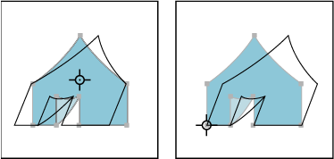

Shear objects
Shearing an object slants, or skews, the object along the horizontal or vertical axis, or a specified angle that’s relative to a specified axis. Objects shear relative to a reference point which varies depending on the shearing method you choose and can be changed for most shearing methods. You can lock one dimension of an object as you shear it, and you can shear one object or multiple objects simultaneously.
 Shearing
is useful for creating cast shadows.
Shearing
is useful for creating cast shadows.
 Shear objects with the Shear tool
Shear objects with the Shear tool
- Select one or more objects.
- Select the Shear tool .
- Do one of the following:
-
To shear relative to the object’s center, drag anywhere in the document window.
-
To shear relative to a different reference point
 , click
anywhere in the document window to move the reference point, move
the pointer away from the reference point, and then drag until the
object is at the desired slant.
, click
anywhere in the document window to move the reference point, move
the pointer away from the reference point, and then drag until the
object is at the desired slant. -
To shear along the object’s vertical axis, drag anywhere in the document window in an up or down direction. To constrain the object to its original width, hold down Shift.
-
To shear along the object’s horizontal axis, drag anywhere in the document window in a left or right direction. To constrain the object to its original height, hold down Shift.
-
Shear objects with the Shear command
Shear objects with the Free Transform tool
- Select one or more objects.
- Select the Free Transform tool
 .
. - Do one of the following:
-
To shear along the object’s vertical axis, start dragging the middle-left or middle-right bounding-box handle, and then hold down Ctrl+Alt (Windows) or Option+Command (Mac OS) as you drag up or down. You can also hold down Shift to constrain the object to its original width.
-
To shear along the object’s horizontal axis, start dragging the top-middle or bottom-middle bounding-box handle and then hold down Ctrl+Alt (Windows) or Option+Command (Mac OS) as you drag right or left. You can also hold down Shift to constrain the object to its original height.
-
 before
you enter the value.
before
you enter the value.